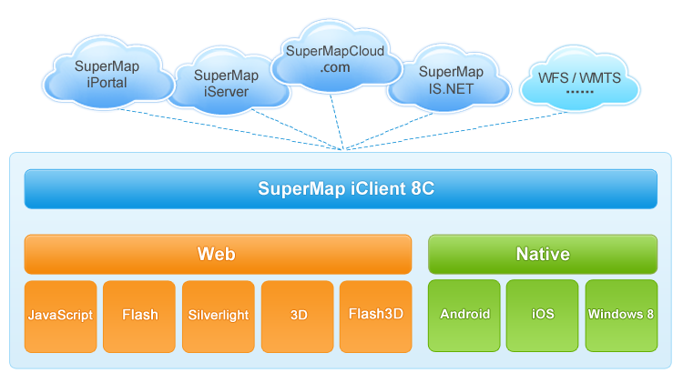

SuperMap iClient for iOS 产品介绍
SuperMap iClient for iOS是一套基于iOS平台的轻量级地图软件开发包（SDK）， 提供了针对iPhone以及iPad移动设备的Web地图访问接口，包括地图浏览等基本接口，以及查询、量算、标绘等服务， 同时支持离线数据的读取，在无网络条件下仍可便捷的访问地图。 通过该产品可以在iOS平台下快速访问SuperMap iServer发布的REST地图服务。

图1 SuperMap iClient 产品架构关系
SuperMap iClient for iOS 的技术特点
- 在iOS平台下访问SuperMap iServer REST地图服务，更加轻便、灵活
针对iOS原生开发语言，较好的效率和用户体验，同时对接iServer REST服务，支持在线和离线方式下的地图服务，方便用户的开发 - 不依赖于浏览器
- 对接SuperMap iServer REST地图服务，提供丰富的地图框架的解决方案，用户更好的专注于自己的业务需求
SuperMap iClient for iOS 提供的功能
- 地图浏览，如缩放、漫游操作，支持多点触控
- 地图属性支持设置固定比例尺
- 叠加地图服务
- 地图查询（范围查询、距离查询、几何对象查询以及SQL查询）
- 地图量算（距离、面积）
- 最佳路径分析
- 动态分段分析
- 单值专题图
- Marker标注及事件响应
- 地物标绘及事件响应
- 交通换乘分析
- 添加对天地图的支持